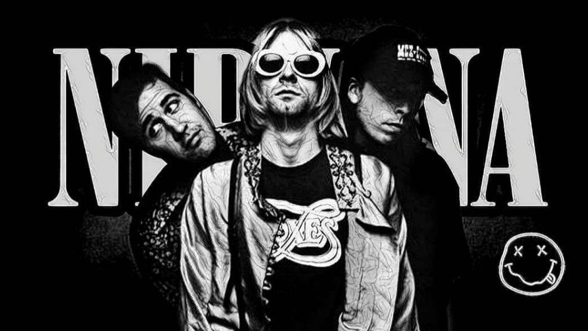

Nirvana — легенда гранжа
Американская рок-группа, основанная в 1987 году в Абердине, штат Вашингтон. Три парня, одна гитара, один бас, одна установка — и целая эпоха, перевёрнутая с ног на голову. Голос поколения 90-х и символ альтернативной музыки.

О группе
Nirvana выросла из андеграундной сцены Сиэтла и стала главной группой гранж-движения. Их второй альбом «Nevermind» (1991) разошёлся тиражом более 30 миллионов копий и неожиданно сместил Майкла Джексона с вершины чарта Billboard. Смотреть дискографию
Состав группы
- Курт Кобейн — вокал, гитара (1987–1994)
- Крист Новоселич — бас-гитара, бэк-вокал (1987–1994)
- Дэйв Грол — барабаны, бэк-вокал (1990–1994)
Почему это важно
Nirvana показали, что музыка без глянца и продюсерской полировки может стать массовой. Их наследие — это три студийных альбома, десятки синглов и влияние на тысячи групп по всему миру. Подробная хронология событий — на странице История.